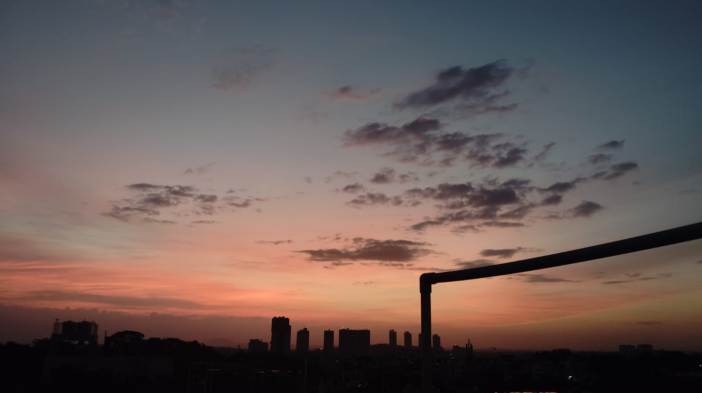
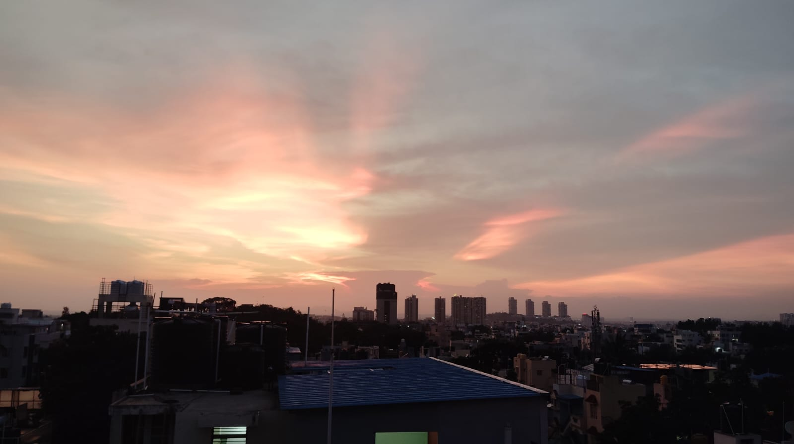
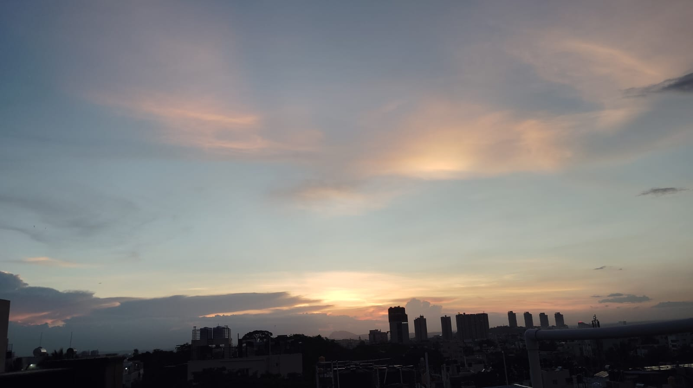

Same Spot
4 PM to 5 PM


forward (64s)
Changes- Sun brightness increased, lower frame
- Sky colour shifted from pink to orange, upper frame
- Clouds appeared/increased in density, upper frame
- Shadows lengthened slightly, lower frame
- City skyline remains consistent across both images
Unchanged- City skyline silhouette
- Cloud patterns in the sky
- Overall sunset color palette
Uncertain- Specific building details
- Movement of individual clouds
- Exact time change duration
reverse (67s)
Changes- Sun is lower/brighter in Image 1; Image 2
- Sky color is warmer in Image 1; Image 2
- Clouds appear denser and more prominent in Image 2
- Shadows are longer in Image 2; Image 1
- Minimal movement or new appearances observed
Unchanged- City skyline is visible in both images
- General cityscape composition remains consistent
- Overall lighting conditions are dusk/twilight
Uncertain- Specific building types are unidentifiable
- Exact cloud types cannot be determined
- Wind or other atmospheric movement is unclear
5 PM to EDIT TIME

forward (62s)
Changes- Sun brightness slightly decreased, Image 2
- Edit Time is closer to sunset, Image 2
- Cloud formations shifted slightly, Image 2
Unchanged- City skyline remains consistent
- Sky color palette similar
- Shadows present in both images
Uncertain- Specific details of buildings obscured
- Exact time difference between images
- Movement of clouds definitively observed
reverse (62s)
Changes- Sun brightness slightly increased in Image 2.
- Sky color shifted towards warmer tones in Image 2.
- Cloud patterns appear more defined in Image 2.
Unchanged- City skyline remains consistent in both images.
- Cloud formations are generally similar.
- Shadows from buildings are consistent.
Uncertain- Specific cloud movement cannot be determined.
- Exact time differences are difficult to judge.